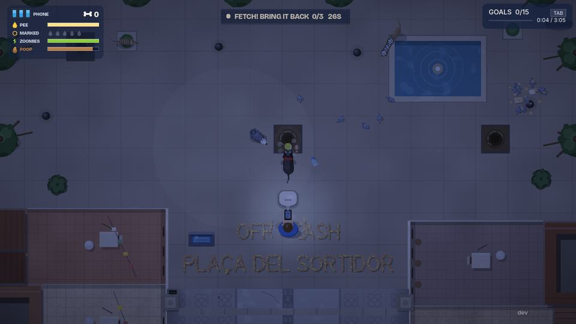

Carrer de Blai
Pintxos, and food on the floor
Poble-sec's favorite evening alley, packed tight from kerb to kerb with wooden pintxo tables, tipped serving trays, street buskers and glowing bar windows leading to Plaça del Sortidor. Every tortilla bite hovering at nose height tests your restraint.
- Off-leash stop
- PLAÇA DEL SORTIDOR (Open plaça)
- Beat the clock
- Under 3:05
Screenshots



Goals (15)
- Mark 5 spots
- Have 4 good long sniffs
- Get the phone home without a scratch
- Get yourself home without a bump
- Get your business bagged
- Bring the ball back 3 times
- Have a good long drink
- Leave it 3 times when told
- Catch a pintxo off a tipping tray
- Wait by a terrace or a group until someone shares
- Land an x3 trick combo
- Snatch the tortilla pintxo off the bar's window
- Spell LEASH
- Find the hidden pernil
- Beat the clock (under 3:05)